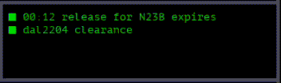

Goals
It's fair to ask, why another VATSIM client? The vice project started out of curiousity with an interest
in trying out some new ideas for how a client might work.
I asked myself "how hard could it be?", and as always seems to be the case, the answer to that question was "much harder
than it seemed at first."
Nevertheless, once you get far enough with something like this, your choice is to finish it or throw it away, incomplete.
Not wanting to the effort to go to waste, I went with finishing it.
A few further motivations became clear as I made progress. The first was cross-platform support: the ability to use VATSIM on non-Windows computers (both Macs and Linux) is of interest to many; vice was therefore written to be cross-platfrom from the start.
The next was that it be open source: the source code to vice is freely available; my hope is that it will see further improvements thanks to the contributions of additional developers.
In its current form, vice does not strive to replicate the experience of using a particular real-world ATC system.
Rather, its goal is to be general-purpose and to be suited to VATSIM's unique top-down control structure, where a controller may be simultaneously responsible for a range of positions.
An interesting future project would be to add modes that better replicate specific real-world systems; much of the core of vice's implementation could be reused for such an effort, making it easier to develop such support.
Credits
vice uses a number of open-source libraries in its implementation; see the credits file in the source code distribution for details.
Thanks also to the font and audio designers whose freely-available work is used in vice; they, too, are listed in the credits file.
Finally, thanks to our AI overlord DALL-E 2, who created vice's icon given the prompt "air traffic control tower retro art deco".
vice is heavily influenced by Ross Carlson's VRC client for VATSIM; many features from VRC have been reimplemented in vice.
Thanks to Ross for many happy hours with VRC as well as the inspiration for those features.
Reporting Bugs
As a new client, vice will inevitably have bugs. If you have encountered one, apologies!
It would be of great help if you would send in a report if vice crashes when you're using it,
reports an error that it cannot recover from, or even if it is doing something that doesn't seem quite
right.
Bugs can be reported via email at bugs@vice.pharr.org. In your bug report, please include:
- A description of what you were doing and how vice responded. If what it's drawing on the
screen is garbled or otherwise incorrect, including a screenshot would be helpful, if you're able.
- Vice's log files from your controlling session; after you exit Vice, it will save a log
file for your session. On Windows, it's in your
AppData folder in Roaming/Vice/vice.log and on Mac, it's in Library/Application Support/Vice/vice.log. Attaching that file to a bug report will greatly help with fixing the issue. Note that this file is overwritten each time you quit vice, so be sure not restart vice before attaching it to a bug report and sending the email.
If you happen to have a github account, bugs can also be reported in the vice issue tracker there, but there is no need to make a github account to report a bug if you don't already have one.
Also, if you find any errors or omissions in this documentation, please email bugs@vice.pharr.org.
(Similarly, if you have a github account, there's the issue tracker for the website contents.
Windows
To install vice on Windows, download and launch the installer below.
After installation, you can find the vice application in the Program Files (x86)/Vice folder.
(Apologies that the installer does not yet offer the option of adding vice to your program menu or making a desktop shortcut; that will
be remedied in a future relase.)
Download Vice v0.1.0 for Windows
Mac
On a Macintosh computer, download the dmg file below; it contains a universal binary that runs
on both Intel (x86) and Apple (M1, ...) CPUs. After opening it, drag Vice.app to your Applications
folder.
Download Vice v0.1.0 for Mac
Sector and Position Files
Vivamus efficitur fringilla ullamcorper. Cras condimentum condimentum mauris, vitae facilisis leo. Aliquam sagittis purus nisi, at commodo augue convallis id. Sed interdum turpis quis felis bibendum imperdiet. Mauris pellentesque urna eu leo gravida iaculis. In fringilla odio in felis ultricies porttitor. Donec at purus libero. Vestibulum libero orci, commodo nec arcu sit amet, commodo sollicitudin est. Vestibulum ultricies malesuada tempor.
Configs
One of the key concepts in vice is the Config: a config...
Typically,
Subwindows
Few to no requirements.
If you're only doing clearance delivery, for example, you don't need a radar scope.
Or if you're watching live traffic for entertainment, you might not have a command-line interface subwindow.
But in general, will have at least one radar scope, the command-line interface, a flight plan subwindow and an airport information subwindow.
how to configure them...
Organization
Vivamus efficitur fringilla ullamcorper. Cras condimentum condimentum mauris, vitae facilisis leo. Aliquam sagittis purus nisi, at commodo augue convallis id. Sed interdum turpis quis felis bibendum imperdiet. Mauris pellentesque urna eu leo gravida iaculis. In fringilla odio in felis ultricies porttitor. Donec at purus libero. Vestibulum libero orci, commodo nec arcu sit amet, commodo sollicitudin est. Vestibulum ultricies malesuada tempor.
Radar Scopes
Vivamus efficitur fringilla ullamcorper. Cras condimentum condimentum mauris, vitae facilisis leo. Aliquam sagittis purus nisi, at commodo augue convallis id. Sed interdum turpis quis felis bibendum imperdiet. Mauris pellentesque urna eu leo gravida iaculis. In fringilla odio in felis ultricies porttitor. Donec at purus libero. Vestibulum libero orci, commodo nec arcu sit amet, commodo sollicitudin est. Vestibulum ultricies malesuada tempor.
Click aircraft to select it. This affects what's displayed in the flight plan subwindow as well as the currently selected aircraft in the command-line interface.
Command-Line Interface
An instance of the command-line interface subwindow must be part of a Config for the user to be able to enter
keyboard commands.
It has no settings beyond the selection of a font and font size to use for it.
This subwindow is unusual in that only one instance of it can be created in a config; it doesn't make sense to have more than one available, since both would receive the same input from the user.
Airport Information
The Airport Information subwindow can be used to display a variety of information about one or more airports.
Which airports are covered by an Airport Information subwindow can be entered in its settings window.
Each of the following can be included in the information displayed, again determined by the subwindow's settings.
The current time and the weather for the selected airports. (Here, only KPHL is selected.)
The altimeter and winds are highlighted, for ease of finding them quickly.
Uncleared aircraft on the ground at the selected airports. Basic information about the flight plan is shown in the display, including the aircraft's filed route.
In this way, when a pilot first connects, it's easy to quickly see if their flight plan has problems.
("Uncleared" is currently determined using the heuristic that aircraft without assigned squawk codes are assumed to be uncleared.)
Aircraft that have been cleared but have not yet departed are listed under "Departures".
The information included is tailored to the needs of ground and tower controllers, including aircraft type
(for wake turbulence purposes), the cleared altitude, and the start of their route.
Here the second aircraft has an indicator that shows that it is not squawking mode Charlie.
Aircraft that are squawking a code other than their assigned code are also flagged here.
Aircraft that have left the airport and are in the air can be shown under "Departed".
Here, the cleared altitude is shown first and the aircraft's current altitude is shown afterward.
The scratchpad is shown between the aircraft type and the cleared altitude.
In this case, both aircraft have empty scratchpads.
Next, arrivals can be shown. The format parallels that of departed aircraft, with the scratchpad after the aircraft type.
Next is the aircraft's temporary altitude, if set, followed by its altitude.
Its distance to the airport is shown last.
Note that arrivals are not sorted strictly by their distance to the airport; an aircraft 10,000 feet directly above the field may be assumed to be arriving later than one 6nm away at 2,000 feet.
The sorting of arrivals attempts to display them in the order in which they will reach the airport, given these considerations.
Finally, the active controllers are listed. In addition to the positions and radio frequencies, the sector id is displayed for each position if it is available.
Furthermore, the character used to identify aircraft tracked by the controller on radar scopes is shown, again if it is known.
Flight Plan
There's not much to say about the flight plan window, though it's an invaluable tool; it shows the flight plan for whichever aircraft is currently selected.
(See further discussion of selecting aircraft for more information on aircraft selection.)
Reminders
The Reminders subwindow shows todo items and timers that have been added via the vice command-line interface;
see that documentation for information about the relevant commands.
For timers, the time until the timer expires is shown.
Both timers and todo items can be removed from the Reminders subwindow just by clicking on them.

Notes Viewer
The notes viewer subwindow can be used to display text notes written using the Notes Editor.
One or more notes can be selected in the Notes Viewer settings and then each note can be individually selected.
Notes can be reordered by dragging entries in the list of notes.
In the example below, the Notes Viewer is displaying the missed approach headings and altitudes for the KJFK runways as well as the takeoff headings for runway 13 in the non-13L ILS configuration.
From its configuration dialog box on the right, we can see that the headings for runway 13 with 13L ILS are at hand but are not displayed; in this way it's possible to have a number of possibly-relevant quickly available but not necessarily dispayed.
In addition to displaying multiple notes in a single Notes Viewer, it can also be useful to have multiple Notes Viewer subwindows, each displaying different information.
Colors
There are currently two color schemes—dark and light—built-in to vice. More will be available in the future.
To switch between them, choose the "Settings/General..." menu item and then select the desired color scheme.
It is also easy to edit the colors in the selected color scheme; choose the "Settings/Colors..." menu item and the color editor will appear, showing all of the colors in the current color scheme.
As you edit colors in the color editor, the changes are reflected immediately in the user interface; this makes it easy to dial in the colors as you like them.
Sounds
It is possible to configure vice to play sounds when various notable things happen. Choose the "Settings/Sounds..." menu item and the following dialog box will appear:
Sound effects can be selected for all of the indicated events and also be enabled and disabled globally.
Nearly twenty sounds are currently available.
(Note that it is not currently possible to provide your own sound files.)
Writing and Editing Notes
Text notes for the Notes Viewer subwindow can be entered by choosing the "Settings/Notes..." menu item.
Doing so brings up a small notes editor that allows adding new notes and editing or deleting existing notes.
Selecting Aircraft
A key concept for working with the CLI is the currently-selected aircraft.
Clicking on an aircraft's track or datablock in a radar scope selects it, and entering an aircraft's callsign in the CLI causes it to become the currently-selected aircraft.
The currently-selected aircraft is indicated with a distinct color for its datablock in radar scopes and by its callsign being shown in the CLI prompt. For example, AAL1575 is the selected aircraft below:
For all of the commands that operate on aircraft, the currently-selected aircraft is used by default, unless another aircraft is specified explicitly.
The currently-selected aircraft can be changed simply by selecting another aircraft.
Alternatively, the currently-selected aircraft can be cleared either by clicking on a radar scope away from any aircraft or by pressing the "escape" key.
Another way to specify aircraft for commands is to start entering a command and then click on an aircraft in a radar scope.
That aircraft's callsign will be automatically added to the command being entered.
In order to make it easier to select aircraft using the command-line, vice allows entering a partial callsign.
If the given callsign is unambiguous, then the corresponding aircraft is selected, but if multiple aircraft match, an error is issued.
In the example below, the "SWA" callsign alone is insufficient, but typing "SWA2" and hitting enter is enough to select SWA2783.
In this case, the aircraft might alternatively have been seleced by entering a partial callsign like "783".

Note also that it is not necessarily to capitalize the letters in callsigns.
If you have entered a partial callsign, pressing the "tab" key will cause vice to attempt to replace your text with the full callsign.
However, if multiple callsigns match, it will print a message below the text entry field, showing the matches.
Seeing the options in that way makes it easy to see how to make the callsign unambiguous.
In the sample below, hitting tab after typing "AAL1" is insufficient to select the desired aircraft but after seeing the error message, we see that adding a "6" to make "AAL16" and then typing tab works to select AAL1610.
Clearance Delivery
Reminder
Remember that vice does not connect to VATSIM. Thus, although doing things like changing the cleared altitude of an aircraft
causes the reported altitude clearance in the flight plan window to change, it has no actual effect.
A vareity of commands are available for clearance delivery when using vice's command-line interface.
Some change individual aspects of an aircraft's flight plan and others provide information that is useful
when clearing an aircraft.
It is a good idea to have a Flight Plan subwindow visible as part of your Config so that you can easily check an aircraft's current flight plan and see the effect of changes you make to it as you are clearing it.
The following commands modify components of a flight plan:
| Command |
Function |
Example |
actype callsign type |
Sets the aircraft type, including its equipment suffix. |
actype ual955 B772/G |
alt callsign altitude |
Sets the aircraft's cruising altitude. |
alt BAW60T 31000 |
arr callsign airport |
Sets an aircraft's arrival airport. |
arr ezy68WZ lgw |
dep callsign airport |
Sets an aircraft's departure airport suffix. |
actype EZY68WZ CFU |
equip callsign suffix |
Sets aircraft's equipment suffix. |
equip TRA9008 G |
ifr callsign |
Marks the aircraft as an IFR flight. |
ifr klm1602 |
vfr callsign |
Marks the aircraft as a VFR flight. |
vfr n205bw |
scratchpad callsign value |
Sets the aircraft's scratchpad. If no entry is specified, the scratchpad is cleared. |
scratchpad AFR17LF I9R |
squawk callsign code |
Sets the aircraft's squawk code. If the aircraft is IFR and no value is specified, then a squawk code is automatically assigned. |
squawk AAL622 |
route callsign route |
Specifies the aircraft's entire route. |
route JIA5620 +JFK5 MERIT ROBUC3 |
All of these commands use the currently-selected aircraft, if there is one.
For example, if UAL955 is selected, then its type can be set simply by typing actype B772/G;
there is no need to specify the callsign.
The altitude specified with the alt command may either be a full altitude, or may be a three digit altitude, in which case it is interpreted as being hundreds of feet. Thus, either "31000" and "310" could be provided to specify FL310.
If only a minor modification to the route is necessary, then it's undesirable to have to reenter all of it using the route command.
For such cases, the editroute command is available.
It loads the specified aircraft's route into the command-line input, ready to be directly edited.
After you correct it, hitting enter causes the route command to be executed.
| Command |
Function |
Example |
editroute callsign |
Prepopulate the command-line entry with a route command for modifying the aircraft's currently-filed route. |
editroute UAL955 |
An example of its use is below. After editroute aal284 is entered, the route command is automatically generated and the cursor is positioned at the start of the current route, making it easy to make changes.
vice has its own copy of the US FAA's preferred route database (PRD).
The faaprd command can be used to look up the routes in the database for
an aircraft's departure and arrival airport:
(For ZNY controllers, there is a nyprd command that looks up routes in the ZNY PRD.)
| Command |
Function |
Example |
faaprd callsign |
Print any routes for the aircraft from the FAA preferred route database. |
faaprd UAL955 |
nyprd callsign |
Print any routes for the aircraft from the ZNY preferred route database. |
nyprd DDX2 |
Note
The databases currently available in vice are addmittedly US-centric (though it does include a database of international airports).
We'd be happy to extend it to have a wider range of data sources, given information about where to find them!
Tracking and Handoffs
Another group of commands takes care of actions that are performed for aircraft that are in flight.
| Command |
Function |
Example |
accept callsign |
Accept the handoff of the aircraft. |
accept BAW1 |
drop callsign |
Drops the track on the specified aircraft. |
drop FDX265 |
handoff callsign controller |
Initiates a handoff of the aircraft to the specified controller. |
handoff UPS22 JFK_APP |
pointout callsign controller |
Points the aircraft out to the specified controller. |
pointout JIA2703 6e |
reject callsign |
Rejects the handoff of the aircraft from another controller. |
reject DAL144 |
tempalt callsign altitude |
Specifies a temporary altitude for the aircraft. |
tempalt RYR1402 80 |
track callsign |
Initiates a track for the specified aircraft. |
track EXEC55 |
As with earlier commands, if there is a currently-selected aircraft, then the callsign need not be specified.
Further, as before, aircraft callsigns may be abbreviated when the abbreviation is unambiguous.
Finally, as with the alt command, the altitude specified with tempalt may either be in feet or in hundreds of feet.
For the commands that take a controller, the controller may either be specified via a callsign (e.g., JFK_APP), or using the identifier for the position (e.g., 6e).
Finally, a number of the commands from the Clearance Delivery section are useful for
enroute controlling—squawk and scratchpad especially, though the others are also useful for pop-up clearances.
Flightradar24 (Basic)
Selecting "Flight Radar" establishes a direct connect with Flightradar; vice will display traffic in a 50nm radius from the center of the radar scope.
Note that only limited information is available for each aircraft—just the callsign, altitude, and ground speed.
No further information (e.g., the squawk code, departure and arrival airports, or flight plan) is available.
The main advantage of this option is that it is a simple way to fill the scopes with realistic air traffic.
Flightradar24 (vrclivetraffic)
A better option for viewing live traffic is to use vrclivetraffic, which draws from multiple data sources to provide more complete information for each aircraft.
To use vrclivetraffic with vice, install vrclivetraffic as usual, edit its config.json as necessary to inform it which airport you are interested in, and launch it.
Once vrclivetraffic is running, select the "VATSIM (not actually)" option in the "New connection" dialog box:
Leave the address field unchanged and click "Ok". After a few seconds, traffic should start to appear in the radar scope.
Recorded VATSIM Sessions
The most complete option is to record the network traffic a VATSIM session when using another client (e.g., VRC).
That recorded traffic can then be replayed in vice, which makes it possible to see how that session would have appeared in vice.
Do the following to prepare to record VATSIM sessions for vice:
- Install the vsniff utility from its releases page; binaries for both Windows and OSX are available.
- If you're using VRC, open or create the file
myservers.txt in Documents/VRC. Add a line to the file containing: 127.0.0.1 vsniff.
- For Euroscope, open or create the file
myipaddr.txt in Documents/Euroscope. Add a line to the file containing 127.0.0.1 vsniff.
Then, each time you want to record a controlling session, do the following:
- Launch vsniff.
- Choose "vsniff" as your server when you establish a connection in VRC/Euroscope.
- Control as usual. As your session progresses, a file named along the lines of
2022-09-15@121005.vess will be written storing the network traffic. (The filename encodes the date and time at which the session began.)
To replay a recorded session file in vice, choose the "VATSIM Replay" connection type. You will be prompted to locate a VATSIM session file. After doing so, you will be offered the opportunity to speed up or slow down the rate at which the session is replayed and to select an offset into the session in seconds.
The experience with recorded VATSIM sessions is fairly complete, including full flight plans, the tracking of aircraft by controllers, and the controller chat from the session.